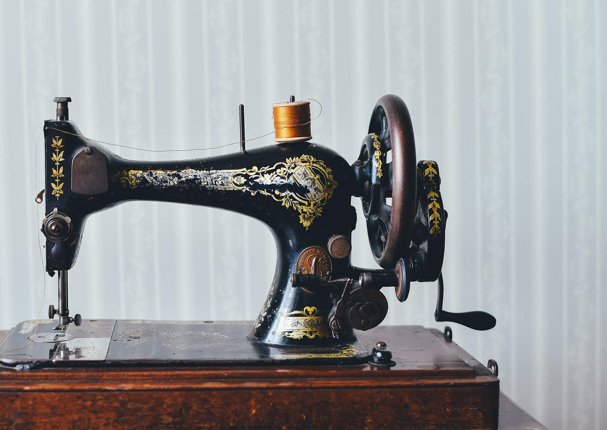
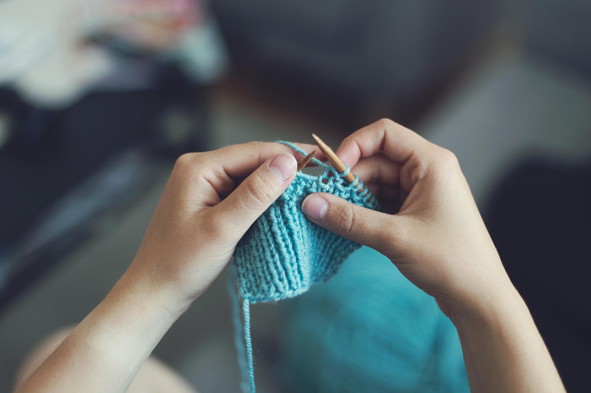

-

- 
- 
Nossa história
Somos uma empresa de São Paulo, focada no ramo de fabricação de bolsas, mochilas, sacolas e acessórios. Prezamos sempre pelo prazo acordado com o cliente, pensando sempre na alta qualidade, criamos o produto e a utilização necessária para todas as necessidades (datas comemorativas, eventos, etc.). Profissionais de alta performance treinados e qualificados para manter sempre um acabamento perfeito, qualidade ímpar e prazo de entrega. Criado por Fidélica Demartini, o núcleo de criação foi construído durante mais de 20 anos de experiência no mercado de fabricação. Nascemos da ideia da Fidelica demartini que está no mercado a mais de 15 anos com confecções e consultorias, seus filhos gêmeos Mark e Mayron, tomaram a direção do negócio assim visando otimizar processos já realizados, contando com desempenho e eficácia, além do amor e paixão pelo que nos move, entre em contato com a gente para qualquer dúvida além de produções.